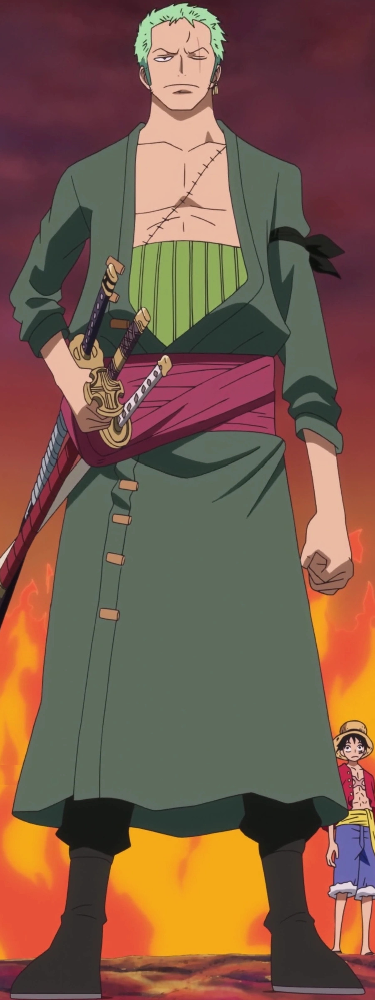
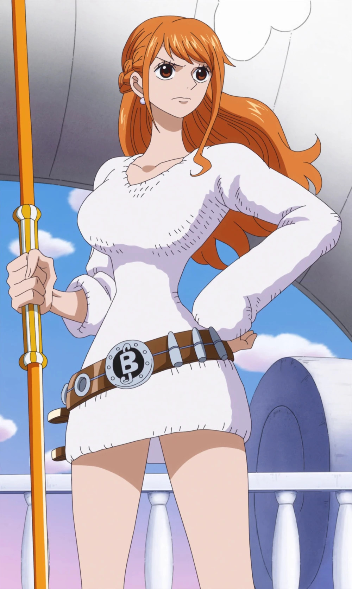
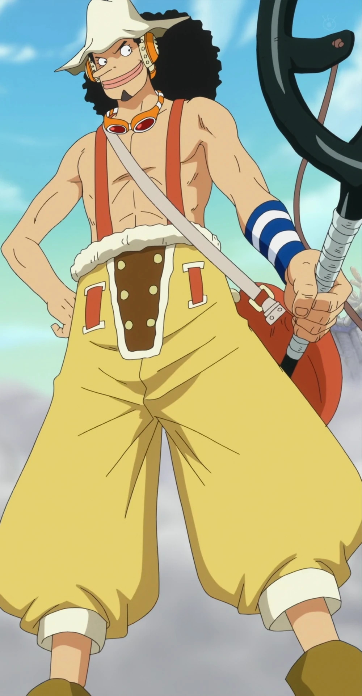
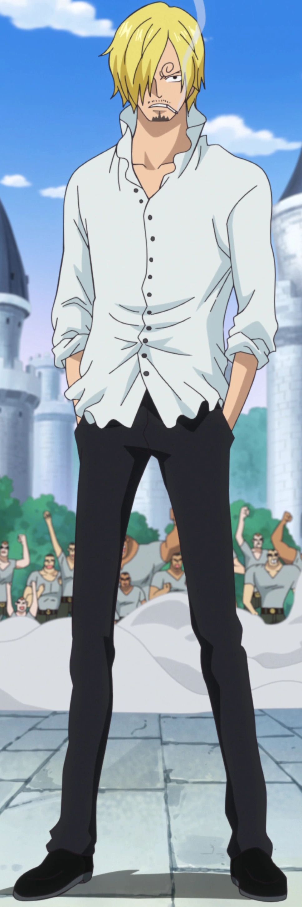
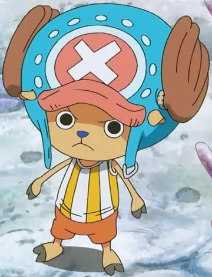
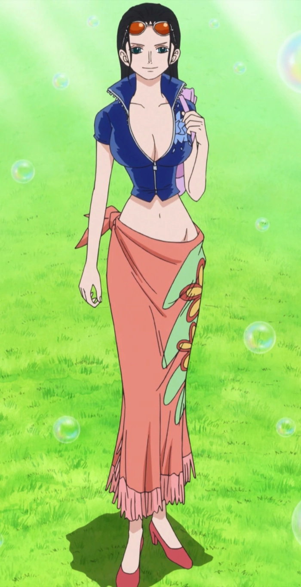
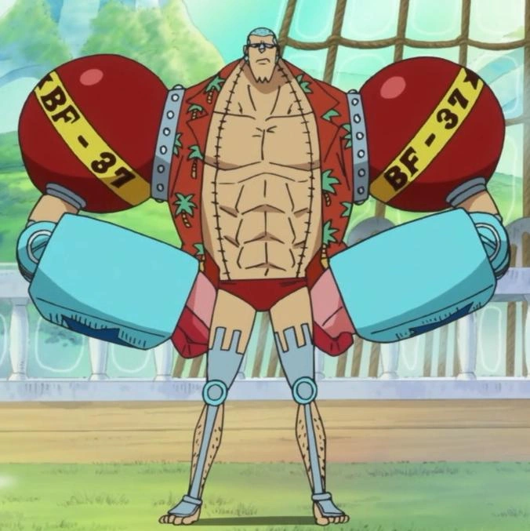
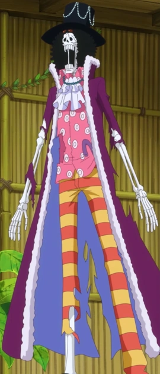
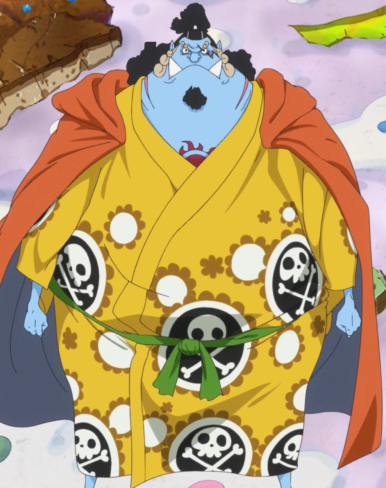

Monkey D. Luffy (モンキー・Ｄ・ルフィ Monkī Dī Rufi), más conocido como Luffy «Sombrero de Paja» (麦わらのルフィ Mugiwara no Rufi), es el
protagonista principal de la serie de manga y anime One Piece. Lidera los Piratas de Sombrero de Paja y es uno de los
Cuatro Emperadores que dominan los mares del Nuevo Mundo. Consumió la fruta del diablo llamada fruta Gomu Gomu,
otorgándole habilidades elásticas. Además, posee habilidades únicas, como el haoshoku haki, que solo posee una entre un
millón, y los otros dos tipos de haki.
Luffy proviene de una familia notable: es hijo de Monkey D. Dragon, líder del Ejército Revolucionario y criminal más
buscado del mundo; nieto de Monkey D. Garp, héroe de la Marina y ex vicealmirante; hermano adoptivo de Ace "Puño de
Fuego", antiguo comandante de los Piratas de Barbablanca, y de Sabo, oficial general del Ejército Revolucionario. Su
meta es convertirse en el Rey de los Piratas, encontrar el tesoro legendario conocido como el "One Piece", que
perteneció al anterior Rey de los Piratas Gol D. Roger, y conquistar el Nuevo Mundo liderando a su tripulación.
Como fundador y capitán de los Piratas de Sombrero de Paja, es el primer miembro de la tripulación y uno de sus tres
principales combatientes. Inicialmente, fue uno de los Once Supernovas junto a Roronoa Zoro, con una recompensa superior
a Belly 100.000.000. Posteriormente, su recompensa subió a Belly 1.500.000.000 tras los eventos en Whole Cake Island y
actualmente cuenta con una recompensa de Belly 3.000.000.000 después del asalto a Onigashima.
Luffy ha ganado notoriedad mundial al desafiar a los Siete Guerreros del Mar y la Marina, cometiendo acciones
amenazadoras contra el Gobierno Mundial. Es conocido por su comportamiento impulsivo y decisiones consideradas locuras,
como el incidente en Enies Lobby, la infiltración y fuga de Impel Down, y su participación en la batalla de Marineford.
Su reputación se destaca por asaltar las tres instalaciones más importantes del gobierno y escapar sin bajas en su
tripulación, especialmente en Enies Lobby.
Sus acciones, incluyendo el ataque a un Noble Mundial, han llevado a que la Marina lo etiquete como un pirata que
causará graves problemas en el futuro.
Roronoa Zoro (ロロノア・ ゾロ Roronoa Zoro), conocido como El Cazador de Piratas (海賊狩り Kaizoku Gari), es el principal
combatiente de los Piratas de Sombrero de Paja, uno de sus dos espadachines y un alto oficial de la Gran Flota de
Sombrero de Paja, además de ser un antiguo cazarrecompensas.
Originario del East Blue, Zoro es hijo de Tera y Roronoa Arashi, nieto de Shimotsuki Furiko y Roronoa Pinzoro, y sobrino
nieto de Shimotsuki Ushimaru. Esto lo convierte en descendiente matrilineal tanto de la familia Shimotsuki del País de
Wano como del legendario samurái Shimotsuki Ryuma. Fue el primer miembro en unirse a la tripulación y es considerado
parte del Trío Monstruoso, junto a Luffy y Sanji. Su sueño es convertirse en el mejor espadachín del mundo. Zoro también
forma parte de los Once Supernovas, que son parte de «la peor generación».
Zoro obtuvo su primera recompensa de Belly 60.000.000 después del arco de Arabasta. Posteriormente, aumentó a
Belly 120.000.000 tras el incidente de Enies Lobby y a Belly 320.000.000 después del arco de Dressrosa. Tras el asalto a
Onigashima, su recompensa aumentó a Belly 1.111.000.000, siendo la segunda más alta de la tripulación, solo superada por
la de Luffy.
Zoro viste una camisa blanca, pantalones negros, botas del mismo color y lleva un haramaki verde, una armadura
tradicional de los samurái. Aunque su diseño no es el original, suele usarla solo para sujetar sus espadas. Siempre
lleva consigo una bandana negra que generalmente amarra en el antebrazo izquierdo; sin embargo, cuando se enfrenta en
serio, la ata alrededor de la cabeza, lo que le confiere una apariencia más sombría que puede infundir temor en muchos
de sus oponentes, llevándolos a considerarlo como un auténtico demonio. Al igual que Luffy, tiende a cambiar su
vestuario en situaciones o lugares con climas extremos, como Arabasta o Drum. La única constante en su atuendo es su
pantalón, y rara vez se quita el haramaki, aunque en algunas ocasiones se le ha visto sin él.
Es el cuarto miembro más alto de la tripulación, con una estatura de 178 cm. Tiene una expresión seria y luce tres
pendientes dorados en la oreja izquierda. Su cabello es verde, lo que lleva a que Sanji lo llame «Marimo» (un alga
redonda y verde). Esta broma ha dado lugar a diversas y divertidas situaciones, incluso llegando a confundirse él mismo.
Presenta una cicatriz en el pecho causada por Mihawk durante su duelo contra él. También tiene dos cicatrices en las
piernas provenientes del arco de Little Garden, cuando él, Nami y Vivi fueron capturados por Mr. 3.

Nami (ナミ Nami?), conocida como Gata Ladrona (泥棒猫 Dorobō Neko?),[12] es una pirata y la navegante de los Piratas del
Sombrero de Paja, además de ser una de los oficiales principales de la Gran Flota de Sombrero de Paja. Se convirtió en
el tercer miembro de la tripulación y fue la segunda en unirse, formalizando su incorporación durante el arco de Arlong
Park.
Anteriormente, fue miembro de los Piratas de Arlong y, en un principio, se unió a los Piratas del Sombrero de Paja con
la intención de robarles. Sin embargo, su unión oficial ocurrió después de rebelarse contra Arlong y su posterior
derrota a manos de Luffy. En la actualidad, tiene una recompensa de Belly 366.000.000.
Nami es una chica joven, de tamaño normal con una constitución delgada, y que originalmente tenía el pelo corto de color
naranja. En el anime ella fue el primer personaje principal en aparecer en el episodio 1 antes que Luffy (aunque en el
manga apareció al principio del arco de la ciudad Orange). Muchas personas la consideran muy atractiva y hermosa,
comparándola en una ocasión con una diosa. Ella tiene un tatuaje azul (negro en el manga) en su hombro izquierdo que
representa una mandarina y un molinillo (un homenaje a Bell-mère y Genzo, respectivamente), en donde ella antes tenía un
tatuaje que indicaba que ella era miembro de la banda de Arlong.
Nami usa mucha variedad de ropas en la serie pero su traje de larga duración es una camisa a rayas blancas y azules, una
minifalda de color naranja y botas naranjas de tacón alto. Nami usa sandalias de tacones altos o botas en cada saga,
pero su altura y su postura no se ven afectadas por la altura de sus tacones. Nami no camina como una persona normal con
tacones, en lugar de eso funciona, mientras que los lleva puestos. Ella conserva su aspecto original hasta el final del
arco del capitán Kuro, después se la ve con un vestido distinto para cada arco.
Durante el arco de Arlong, Nami llevaba una camisa verde y sandalias de tacón alto de color naranja. A partir de
entonces, Nami llevaba sandalias de tacón alto y ropa más ligera (con el tatuaje ya no como un secreto).

Usopp (ウソップ Usoppu) es el francotirador de los Piratas de Sombrero de Paja y uno de los oficiales principales de la Gran
Flota de Sombrero de Paja. Ocupa el cuarto puesto en la tripulación y fue el tercer miembro en unirse oficialmente.
Aunque abandonó temporalmente la banda en el arco de Water 7, se reincorporó durante el arco del regreso a Water 7.
Originario de la villa Syrup en el East Blue, Usopp fue el capitán de los Piratas de Usopp en ese lugar. Sin embargo,
después de los eventos del arco de Villa Syrup, se unió a los Sombrero de Paja. Su sueño es convertirse en un valiente
guerrero del mar, al igual que su padre. En la actualidad, su recompensa asciende a Belly 500.000.000.
Durante la mayor parte de la historia, Usopp es un joven de piel blanca pero bronceada y constitución delgada, ojos
grandes y redondos, labios gruesos y pelo negro muy rizado de longitud media; aunque el rasgo más llamativo de su
apariencia es, sin duda, su larga nariz (que aparentemente es una alusión al personaje de Pinocho, el protagonista de un
cuento del mismo nombre, un niño de madera al que le crecía la nariz cada vez que decía mentiras). Este llamativo rasgo
fue aparentemente heredado de su madre, mientras que en todos los demás rasgos de su rostro es prácticamente idéntico a
su padre (esto es notable incluso teniendo en cuenta que el aspecto de su padre ha sufrido muchos cambios con el paso
del tiempo; sobre todo en lo referente al cabello, que pasa de ser igual de negro y rizado que el de su hijo a ser rubio
y llevar rastas). En lo que se refiere a su cuerpo, Usopp es algo más alto que Luffy (mide 174 cm.) y su constitución
es, si hacemos comparación, más semejante a la de Sanji y del capitán, que a la de Zoro o mucho menos Franky.
Suele llevar puesto un pañuelo oscuro de cuadros amarillos en la cabeza para apartarse la melena rizada de delante de
los ojos; y justo encima lleva puestas unas gafas de tirador especiales, con lentes de precisión y capacidad de aumento,
que puede subir y bajarse a los ojos según lo necesite. Durante buena parte del transcurso de su viaje como pirata
permanece permanentemente unido a este accesorio, por lo que esas características gafas son un detalle prácticamente
imprescindible en casi todos los diferentes atuendos que viste a lo largo de su aventura. La ropa que más se ha asociado
a su imagen, sobretodo al principio de la historia, son unos pantalones tipo peto (overoles) de color marrón oscuro que
solía llevar sin camisa por debajo

Sanji (サンジ Sanji), conocido como Pierna Negra (黒脚 Kuro Ashi) y nacido como Vinsmoke Sanji (ヴィンスモーク・サンジ Vinsumōku Sanji),
es el cocinero de los Piratas de Sombrero de Paja y uno de los oficiales principales de la Gran Flota de Sombrero de
Paja. Ocupa el quinto puesto en la tripulación y fue el cuarto en unirse. A diferencia de los demás miembros, Sanji
nació en el North Blue, siendo el primer integrante de la tripulación que no proviene del East Blue.
Iniciando como el cuarto hijo de la familia Vinsmoke, y por ende, uno de los príncipes del Reino de Germa, Sanji optó
por el exilio y renegó de su familia. Se trasladó al East Blue, donde trabajó como cocinero en el Baratie antes de
unirse a los Piratas de Sombrero de Paja. Es considerado parte del Trío Monstruoso (怪物三人組 Kaibutsu San-ningumi) junto a
Luffy y Zoro, siendo uno de los combatientes más fuertes de la tripulación. Su sueño es encontrar el mar legendario
conocido como All Blue.
Tras los eventos del arco de Whole Cake Island, Sanji obtuvo una recompensa de Belly 330.000.000, siendo la tercera más
alta de la tripulación, superada solo por las de Jinbe y Luffy. A pesar de haber renunciado al apellido de su familia,
el Gobierno Mundial aún lo reconoce como parte de esta, incluyendo su nombre de nacimiento en su cartel de recompensa.
En la actualidad, Sanji posee una recompensa de Belly 1.032.000.000, obtenida después de los acontecimientos del arco del
País de Wano, siendo la cuarta recompensa más alta de la tripulación, superada por las de Luffy, Zoro y Jinbe.
Sanji es un hombre alto (el 5º más alto de la tripulación) y de complexión delgada, que mantiene parte de su rostro y el
ojo izquierdo permanentemente oculto por su cabello rubio y lacio.
De hecho, su ojo izquierdo ha sido visto en tan escasísimas ocasiones en el anime (únicamente unos pocos segundos
durante los episodios 21, 27, 82 y 128, además de en la 6ª película; pero siempre tratándose de breves avistamientos en
los que ve parte de su mirada, mayormente debido a errores de animación), que muchos fans se han planteado si en
realidad Sanji carecía de ojo izquierdo (de hecho en el manga nunca se ha visto su ojo izquierdo; salvo, claro, después
de su cambio de look tras el salto temporal). Sin embargo, el mismo Oda reveló que su ojo izquierdo no tiene nada de
especial.
Otra de las mayores peculiaridades de su aspecto están precisamente en su rostro, y también tiene que ver con los ojos.
Se trata precisamente de sus cejas, que tienen una forma anormalmente curvada en espiral en sentido horario. Las burlas
por parte de algunos de sus compañeros de tripulación a ese respecto (que casi siempre provienen de Zoro) le molestan
especialmente. Luego de que su factor de linaje despertara, las cejas de Sanji ahora se encuentran curvadas en sentido
contrario, igual a sus hermanos en sentido antihorario.

Tony Tony Chopper (トニートニー・チョッパー Tonī Tonī Chopā) es el médico de los Piratas de Sombrero de Paja y uno de los oficiales
principales de la Gran Flota de Sombrero de Paja. Chopper es un reno que consumió la fruta Hito Hito en la isla de Drum.
Se unió a la tripulación como el sexto miembro y fue el quinto en unirse.
Es un Reno de nariz azul que comió la fruta Hito Hito, adquiriendo forma e inteligencia humana. La mayor parte del
tiempo, Chopper mantiene un tamaño pequeño, con forma de reno-humanoide (brain point); las habilidades de su fruta del
diablo le permiten cambiar de apariencia dependiendo de la situación. El cuerno izquierdo de Chopper tiene una placa
metálica alrededor porque se lo rompió en una pelea cuando era más joven, y Hiriluk se lo trató. Chopper tiene un rasgo
destacable que ningún otro reno tiene: su nariz azul.
Varios personajes en One Piece han pensado al principio que Chopper es un mapache (del japonés "tanuki"), debido al
aspecto que tiene cuando se halla en su forma "Brain Point". En realidad se trata de un juego de palabras: el término
japonés "tonakai", que significa reno, es de donde viene el "Tony" del nombre completo de Chopper. A diferencia de su
"Brain Point", cuando Chopper está en su "Heavy Point", es confundido con un gorila o un yeti.

Nico Robin (ニコ・ロビン Niko Robin), conocida también por sus epítetos "Niña Demonio" (悪魔の子 Akuma no Ko) y "La Luz de la
Revolución" (革命の灯 Kakumei no Tomoshibi), es la arqueóloga de los Piratas de Sombrero de Paja y una de los oficiales
principales de la Gran Flota de Sombrero de Paja. Se convirtió en el séptimo miembro de la tripulación y el sexto en
unirse, uniéndose al final del arco de Arabasta. Aunque dejó temporalmente a la tripulación durante el arco de Water 7,
se reincorporó durante el arco de Enies Lobby.
Su sueño es descubrir la verdadera historia investigando los poneglyphs. Actualmente, su cabeza tiene una recompensa de
Belly 930.000.000, siendo la quinta más alta de toda la tripulación.
Como la única superviviente del Clan de Ohara, asumió el rol de arqueóloga, y anteriormente fue la mano derecha del
líder de la organización criminal Baroque Works, usando el alias de Miss All Sunday (ミス・オールサンデー Misu Ōrusandē). También
consumió la fruta Hana Hana.
Debido a su papel como arqueóloga y por ser la única sobreviviente del Incidente de Ohara, el Gobierno Mundial emitió
una recompensa de Belly 79.000.000 por su cabeza cuando apenas tenía ocho años. Ha sido perseguida incansablemente
durante veinte años, acusada falsamente de hundir seis buques de guerra (utilizándola como tapadera para la deserción de
Jaguar D. Saul).
Nico Robin es una mujer alta, delgada pero atlética, con pelo negro hasta los hombros. Sus ojos son de color azul en el
anime (con grandes y anchas pupilas de color azul oscuro al principio y negro más adelante) y de color marrón en el
manga (también en la película 10). Su nariz es larga y recta, delgada y definida. Las extremidades de Robin son muy
largas, especialmente sus piernas, lo que contribuye en gran medida tanto a aumentar su capacidad de combate (dada la
naturaleza de sus poderes) como su altura total; y, como la mayoría de los personajes femeninos de la serie, tiene una
cintura estrecha. Muchas personas consideran su atractivo o belleza.
Se la ha visto en numerosas ocasiones usando un llamativo brazalete de oro con la forma de la letra "N" en él (que hace
referencia a su apellido "Nico"), y conformado por dos tiras de cuero de color púrpura y flecos blancos.

Franky (フランキー Furankī), también conocido como el "Hombre de Hierro" (鉄人 tetsujin), es el carpintero naval de los Piratas
de Sombrero de Paja y uno de los oficiales principales de la Gran Flota de Sombrero de Paja. Se convirtió en el octavo
miembro de la tripulación y el séptimo en unirse, uniéndose al final del Arco del regreso a Water 7.
Originalmente conocido como Cutty Flam (カティ・フラム Kati Furamu) y originario del South Blue, Franky fue miembro de los
Tom's Workers hasta que un incidente que dañó su cuerpo lo llevó a convertirse en un cyborg para curarse. Más tarde, se
convirtió en el líder de la familia Franky, un grupo de cazarrecompensas y desmanteladores de barcos, adoptando su
nombre actual para ocultar su identidad.
Franky y sus seguidores eran inicialmente enemigos de los Sombrero de Paja al principio del arco de Water 7. Sin
embargo, las circunstancias los obligaron a convertirse en aliados al final del mismo arco y del arco de Enies Lobby. El
sueño de Franky es crear un barco y circunnavegar el mundo con él. Construyó el Thousand Sunny y se unió a los Piratas
de Sombrero de Paja para cumplir su sueño.
Recibió una recompensa inicial de Belly 44.000.000 por su participación en el incidente de Enies Lobby, que luego aumentó
a Belly94.000.000 tras el arco de Dressrosa. Después del asalto a Onigashima, su recompensa se incrementó a
Belly 394.000.000.

Brook (ブルック Burukku), también conocido como "Soul King" (ソウルキング Souru Kingu), es el músico de los Piratas de Sombrero de
Paja, uno de sus dos espadachines y uno de los oficiales principales de la Gran Flota de Sombrero de Paja. Se convirtió
en el noveno miembro de la tripulación y el octavo en unirse, haciéndolo al final del arco de Thriller Bark.
Brook consumió la fruta Yomi Yomi, que le permitió volver a la vida después de la muerte una vez. Con el tiempo, Brook
aprendió a aprovechar más profundamente los poderes de su fruta del Diablo, dándole un control significativo sobre su
propia alma y las almas de los demás.
Originario del West Blue, Brook ejerció como guardia real de un reino y posteriormente se convirtió en miembro de los
Piratas Rumbar. Después de morir y resucitar gracias al poder de su fruta, Brook quedó reducido a un esqueleto,
conservando intacto únicamente su afro. Vagó solo por el Florian Triangle durante cincuenta años, conociendo finalmente
a Luffy y sirviendo como aliado de los Sombrero de Paja durante el arco de Thriller Bark antes de unirse oficialmente a
la tripulación. Su sueño es reunirse con su viejo amigo Laboon en la Reverse Mountain, donde vive con Crocus.
Su primera recompensa como miembro de los Piratas Rumbar fue de Belly33.000.000. Más tarde aumentó a Belly 83.000.000
tras el arco de Dressrosa. Tras el asalto a Onigashima, su recompensa se incrementó a Belly 383.000.000.
Brook es un esqueleto extremadamente alto, para ser más concreto es el segundo más alto de la tripulación llegando a
medir 266 cm. Va vestido con un traje formal completo con un sombrero de copa y un bastón. A pesar de no tener piel, su
cabeza sigue teniendo un pelo estilo afro que dice que se mantuvo porque siempre tuvo raíces fuertes. El abrigo de
Brook, su sombrero, pantalones, y afro son de color negro, mientras que los revestimientos interiores de su abrigo son
amarillo y naranja. La cinta atada en su cuello y entre su abrigo es azul. La parte exterior del bastón-espada de Brook
es púrpura. Además, debido al ataque antes de su muerte, la ropa de Brook está rota en algunas partes.

Jinbe, conocido como el Caballero del Mar (海侠のジンベエ Kaikyō no Jinbē), desempeña el papel de timonel en los Piratas de
Sombrero de Paja y es uno de los oficiales principales de la Gran Flota de Sombrero de Paja. Se convirtió en el décimo
miembro de la banda y el noveno en unirse. Jinbe es un gyojin tiburón ballena y anteriormente sirvió como el capitán de
los Piratas del Sol y como miembro de los Siete Señores de la Guerra del Mar.
Su nombre fue mencionado por primera vez por Yosaku al explicar el sistema de los Siete Señores de la Guerra del Mar.
Sin embargo, fue presentado mucho más tarde durante el arco de Impel Down. Jinbe renunció a su título como uno de los
Siete Señores de la Guerra del Mar en la Batalla de Marineford, aliándose con los Piratas de Barbablanca. Durante la
guerra, formó una amistad con Monkey D. Luffy y más tarde se alió con él para evitar el golpe de estado de los Nuevos
Piratas Gyojin contra la familia Neptune y el Reino de Ryugu. Aunque fue invitado a unirse a los Piratas de Sombrero de
Paja, declinó debido a su afiliación aún vigente con Big Mom, afirmando que se uniría una vez que resolviera sus asuntos
pendientes.
Después de los eventos en Whole Cake Island y resolver sus asuntos pendientes, Jinbe se rebeló contra la tripulación de
Linlin y decidió ayudar a los Piratas de Sombrero de Paja a escapar de sus garras. Participó en una alianza con el
equipo de recuperación de Sanji y los Piratas Fire Tank con el objetivo de asesinar a Big Mom, abandonando oficialmente
su tripulación durante la boda fallida de Sanji y Charlotte Pudding.
La primera recompensa de Jinbe fue de Belly 76.000.000. Con el tiempo, tras convertirse en el capitán de los Piratas del
Sol, su recompensa se elevó a Belly 250.000.000. Después de renunciar a su puesto como uno de los Siete Señores de la
Guerra del Mar, su recompensa subió nuevamente a Belly 438.000.000. Tras unirse definitivamente a los Piratas de Sombrero
de Paja y participar en el asalto a Onigashima, su recompensa fue incrementada a Belly 1.100.000.000.
